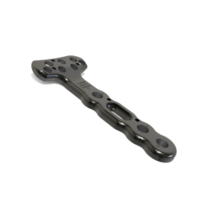

Placa Travolar - Radio Distal
- Design Anatômico: Adaptado à morfologia do rádio distal para melhor acomodação e conforto.
- Fixação Segura: Parafusos bloqueados que garantem maior estabilidade na osteossíntese.
- Versatilidade Cirúrgica: Opção para abordagem volar, permitindo melhor exposição e redução da fratura.
- Material de Alta Qualidade: Produzida em titânio, proporcionando resistência e biocompatibilidade.
- Orifícios Estratégicos: Permitem fixação otimizada e preservação da vascularização óssea.